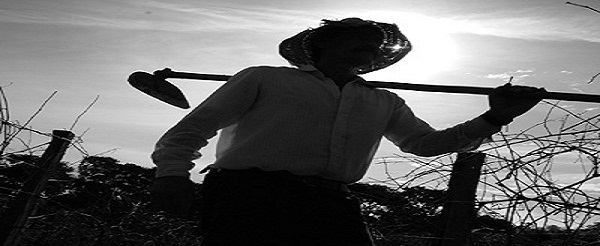

Sobre Nós
-

-

-

Nossa História..
-
O sindicato
De maneira geral, podemos dizer que o sindicalismo rural no Brasil surgiu a partir do ano de 1960, sendo que o ano de 1961, que marca o movimento da legalidade, é um ano de referência no sentido destas lutas. De 1961 a 1964, os movimentos sociais acompanharam e ocuparam os espaços dentro das tentativas do governo Goulart, de implantar as reformas de base, na tentativa de organizar o país internamente e sustentar as responsabilidades do mesmo perante seu endividamento externo. Em 1964 o golpe militar, aos poucos, foi tirando dos trabalhadores os direitos de reunião e limitou drasticamente os direitos democráticos, pois fechou o congresso, eliminou as eleições, dentre tantas ações condenáveis de um regime de exceção. Com isso surgem os movimentos sociais precursores de várias lutas no campo, destaque especial ao MASTER – movimento dos trabalhadores rurais sem terra – RS e as Ligas Camponesas – organizadas por Francisco Julião no Nordeste (PE). A Igreja Católica através da pregação de que o camponês vivia em condições de vida muito difícil, e sem amparo de leis, previdência e aposentadoria pois notadamente até este período os trabalhadores rurais, não tinham nenhum direito. Neste período, criou a FAG, em 1969 com duas bandeiras: aposentadoria e saúde. Em 1962 através de reuniões, congressos etc. a igreja criou o sistema "J": JAC, JEC, JOC e JUC com a intenção de criar os sindicatos católicos e não comunistas, assim ajuda a formatação de uma base de contraponto (junto ao movimento golpista militar). Em 1970 havia sido iniciado um trabalho através de programa do governo Estado. Quirino Signori e João Seibel, juntamente com as esposas, começam o trabalho de conscientização das lideranças, quando surge a figura dos educadores rurais no restante do país.